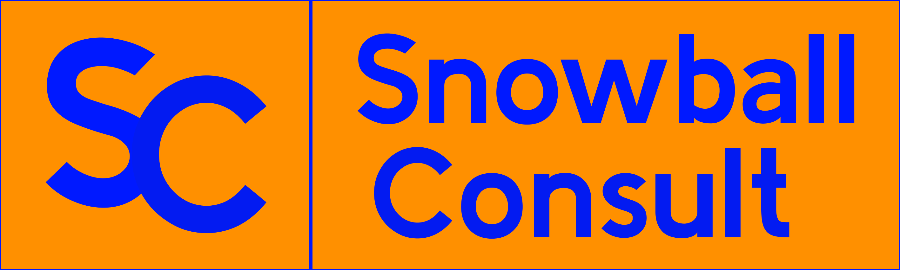

GTM data systems for small-TAM,
high‑ACV companies.
Snowball Consult. GTM data systems for small-TAM, high-ACV companies. Contact: email@snowball-consult.com. More about the practice on the About page.

GTM data systems for small-TAM,
high‑ACV companies.